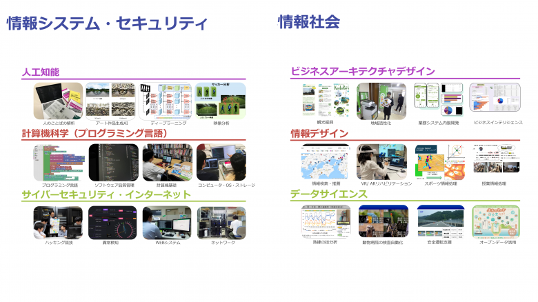

■授業について
実践に基づいた授業内容
香川大学情報コースでは、企業出身の教員が多く在籍しており、実際に開発したシステムにまつわる実例や業界での経験を授業で聞くことができます。単なる知識だけでなく、将来の進路やキャリアを考えるヒントを得られる授業内容が特徴です。
２つの専門プログラム
情報コースには、2つの専門プログラムが設置されています。
・情報システムセキュリティプログラム
→安全で信頼性の高い情報システムの構築・運用技術を習得
・情報社会プログラム
→情報の利活用やその社会的影響について学び、社会課題に対応する力を養成

実社会との連携
講義の一環として、香川県の情報通信企業「STNet」などへの会社見学の機会も設けられています。現場での情報技術の使われ方やシステムの運用について理解を深めることができ、座学では得られない学びが得られます。